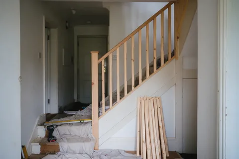
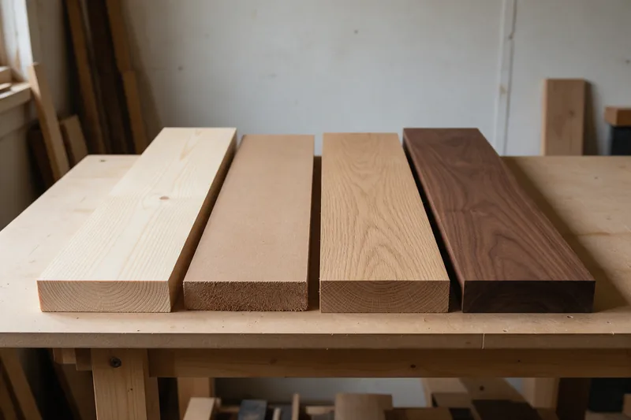

What we do
Six kinds of job, and one habit under all of them.
Whatever the job is, it starts with the opening you actually have rather than the one on the drawing. Measured in three places, built square, then scribed to the wall so the joint closes without filler holding it together. Here is each one on its own.
The six
One at a time.
 Generated photo
Generated photoInternal doors and fire doors
Hung to the opening you have rather than the one the door was made for. Recesses cut by hand, gaps even all the way round, and it still shuts in August.

Generated photoStaircases and banisters
New spindles and handrails, newel posts, and the creaks taken out of a flight that has been annoying somebody for years. Fitted so the whole thing feels solid under your hand.
 Generated photo
Generated photoFitted wardrobes and storage
Built into the alcove you have, out of square walls and all. Scribed tight to the plaster, up to the ceiling, with no gap on top collecting boxes.
 Generated photo
Generated photoSkirting, architrave and flooring prep
Long runs scribed into corners rather than mitred and filled, architrave tight at the head, and floors made flat and quiet before anybody lays anything on them.
 Generated photo
Generated photoSash and timber window repairs
Rotten sections spliced out and new timber let in, sash cords and weights sorted, and the whole thing working again without a plastic window going in.
 Generated photo
Generated photoDecking and garden joinery
Decks, gates, stores and screens, framed properly and set so water runs off rather than sits. Outside timber either drains or it rots, and the framing decides which.
The method
What a fitted job is actually made of.
Four parts, and only the last one is the bit people picture. Where a job goes wrong is nearly always one of the first three.
From sawn to finished
Five stages a piece of timber goes through.
Drawn rather than photographed. It is the same five whether it ends up as a wardrobe or a window sill.

Generated photoThe same four timbers as the board faces on the home page, this time photographed. Left to right: softwood, a plain pale board, oak and walnut.
What we do not do
Worth saying out loud.
Fit new timber onto wet or rotten timber
A new door bottom onto a frame that is soft, or new skirting against a wall with a tide mark on it. The new timber goes the same way as the old timber, usually within a couple of years. The water gets dealt with first, and that is somebody else's job before it is ours.
Claim anything about fire doors beyond fitting them
We fit fire doors to the maker's instructions, with the ironmongery those instructions call for, and we tell you plainly what we have done. We do not test them, certify them, or tell you a door is rated when we have not seen the paperwork for it.
Hide a bad opening with filler and caulk
A tapering gap packed with filler looks fine for a fortnight and then opens up as the timber moves. If a scribe is needed, it gets scribed. If a filler panel is needed, it goes in and it is cut to the wall.
Not sure which of those you need?
Most people are not. Tell us what you can see and we will come and measure it properly.